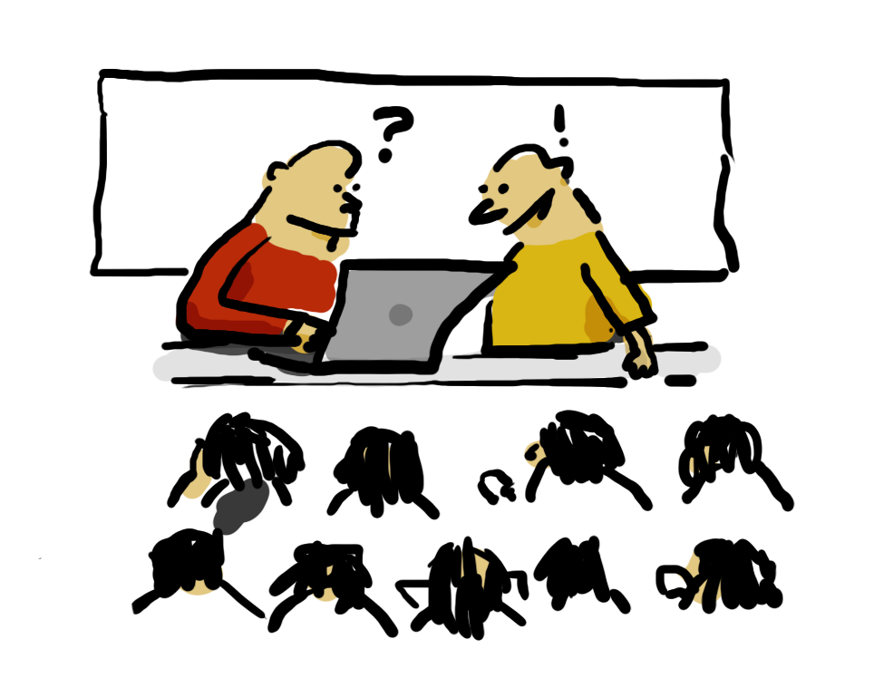
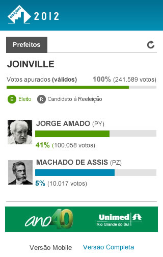
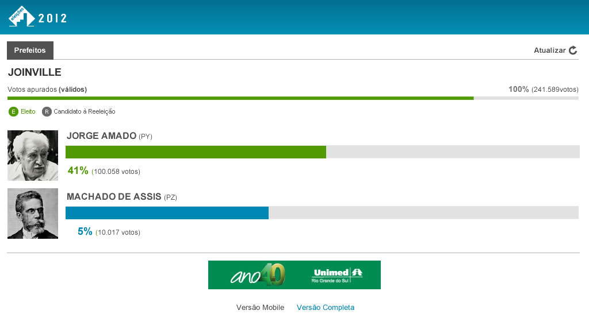

Por: Gabriel Zigolis / @zigolis
&: Rodrigo Lungui / @rodrigolungui
» DOJO
É um encontro onde um grupo de desenvolvedores se reúne para trabalhar em conjunto em um desafio de programação.
» DOJO
Trabalharemos em pares, onde uma pessoa "pilotará" o projeto desenvolvendo os códigos durante 2 minutos e meio.
E a outra pessoa ficará ao lado "pareando" para observar e entender, dando assim continuidade ao código após o término do tempo do "piloto".
» DOJO
Ao trocar o piloto, também será trocado o "pareador", dessa forma todos participarão.
» O projeto
Desenvolveremos um projeto mobile responsivo, com atualização dos dados por AJAX, utilizaremos HTML5, CSS3 e jQuery.
» O projeto
Utilizaremos break points de iphone e ipad.
» DOJO
Vamos começar a diversão.
\o/ \o/ \o/ \o/ \o/ \o/
Por: Grupo RBS / @/Grupo_RBS